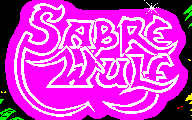

Credits
This disassembly would have taken a lot longer to finish if it weren't for the research and documentation already done and made available by:
Michael R. Cook
This game shares a lot of functionality with Jetpac, hence his disassembly was invaluable!